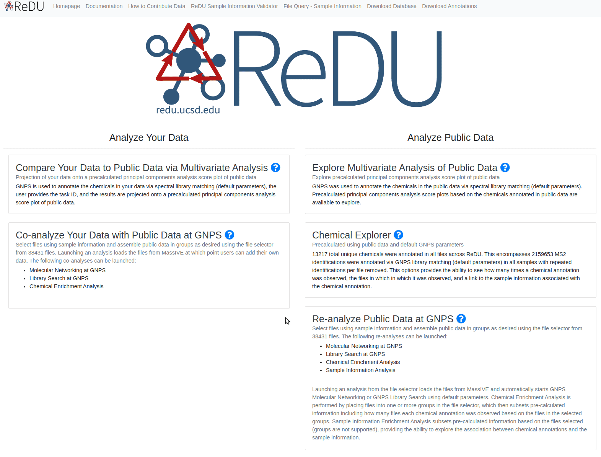

Explore Chemical Annotations and Associated Sample Information in all Public Data
Example Use Cases
- Explore which chemicals have been detected in the public data in order to test or develop hypotheses, and determine the specific files in the public data that are relevant for follow up analysis. viz. I'm interested in the analysis of piperine (a chemical found in black pepper), but I don't know if I can detect it using mass spectrometry; has this chemical been found in any of the public data?
- Launch sample information association on a specific chemical annotation to test or develop hypotheses, viz. I'm interested in the analysis of piperine (a chemical found in black pepper) and it is found in public data, but I don't know what types of samples I should look in; launching sample information association indicates that it is detected in food, human feces, etc.
Summary
Chemical annotation is performed in GNPS by comparing MS2 spectra, specifically product ion spectra, with reference MS2 fragmentation patterns (GNPS integrates the majority of public reference MS2 spectra library). All chemical annotations that originate from public data are tabulated along with the number of files, a button that then provides the individual file names, and a button that lanches a sample information association. Further documentation on GNPS is located here.
Tutorial
- Navigate to the ReDU homepage.
- Click on the "Chemical Explorer" under the Analyze All Public Data section.
- The table will load (this can take a few seconds). You can browse the chemicals either by scrolling down the page or by searching for specific chemicals via Ctrl+F (COMMAND F on MAC OS). NOTE: The same chemical can have multiple GNPS annotations.
- Users can click on the View Files button (orange) on the right side of that page to view the files in which a particular chemical was annotated. File Query for Sample Information displays all the sample information related to a single file (requires full path).
-
Users can explore Sample Information Associations by clicking the View Associations button (orange) on the right side of the page.

Notes:
- GNPS annotations via spectral reference matching are considered level 2 (putative annotation based on spectral library similarity) or level 3 (putatively characterized compound class based on spectral similarity to known compounds of a chemical class) by the 2007 metabolomics standard initiative PMID: 24039616.
- The same chemical can have multiple GNPS annotations. Slight variation in the MS2 spectra (m/z or abundance) cause the pattern to match different reference MS2 spectra for the same chemical. Users are highly-encouraged to double check their findings.
Last update: January 17, 2020 23:32:04